Monstros: original × Mega × nosso
R2236 · 26/11/2026 · palco offline: mesmo prefab, pose do clip 1, câmera do jogo (−45° / 41,5°), sem sombra. O jogo não foi aberto; falta a conferência no jogo.
O que estava errado na cena Mega
- Escuro e esverdeado. A neblina Forward do mapa (
#111100em Tarkan,#220000na Lost Tower,#001122em Atlans) pegava os monstros, que são Forward na fila 2900, a partir de 8 m atrás do herói. O cenário usa outra neblina, então só o monstro escurecia. Agora o renderer do monstro e do NPC fixaunity_FogParamsem "sem neblina". - Tom do sol da cena. O tom R2216 seguia a cor e a força do sol da cena; no entardecer multiplicava a textura por cerca de (0,60; 0,46; 0,37). Nas cenas Mega o tom agora é neutro, sem matiz.
- Exposição que faltava. Os mapas próprios passam pela gradação de dia (1,182); as cenas Mega não. O tom das cenas Mega leva esse fator, e o monstro sai igual ao do modo de mapas originais.
- Sem nome e sem destaque. O nome e a borda vermelha só procuravam o monstro na lista de superfície; nas cenas Mega ele fica em outra lista (
nativeLayerActorsR590). As duas buscas agora cobrem as duas listas. - Lost Tower, "metade do corpo". A malha do Shadow e do Poison Shadow é só ombreiras, crista e garras (veja a linha do Shadow). No original o corpo são sprites em cada osso, que o porte não desenhava. Foram repostos pela receita do C++.
Galeria por mapa
Cada célula traz a cor média do monstro, o ΔE (CIE76) contra a coluna "Nosso, mapas originais" e a luminância relativa a ela. ΔE até 2 não se percebe.
| Monstro | Original C++fórmula do ZzzBMD + luz do chão do mapa, textura do cliente | Mega, modo 3lê o SH e a neblina da cena | Mega, modo 2sem cena: referência neutra | Nosso, mapas originaiso que o usuário aprovou | Nosso antes (r1138)cena Mega, 18h30, 14 m atrás do herói | Nosso depois (R2236)mesma cena, hora e distância |
|---|---|---|---|---|---|---|
| Iron Wheeltipo 57 · tarkan | 52,47,45 · ΔE 0.5 · lum 0.99× | 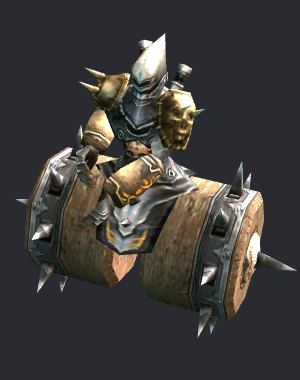 102,94,79 · ΔE 21.3 · lum 3.77× | 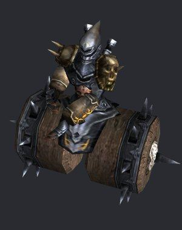 61,56,52 · ΔE 3.8 · lum 1.34× | 52,48,45 | 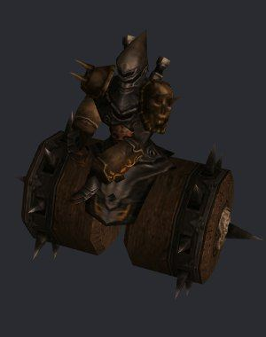 33,24,16 · ΔE 11.9 · lum 0.34× |  52,48,45 · ΔE 0.0 · lum 1.00× |
| Tantalostipo 58 · tarkan | 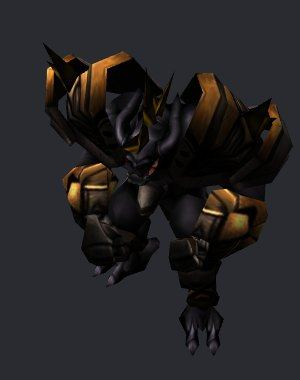 29,21,15 · ΔE 4.3 · lum 0.66× | 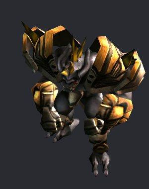 76,61,41 · ΔE 17.7 · lum 4.01× | 43,32,23 · ΔE 2.7 · lum 1.30× | 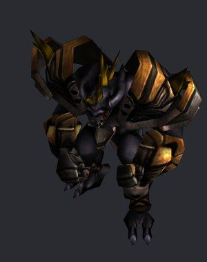 37,28,20 | 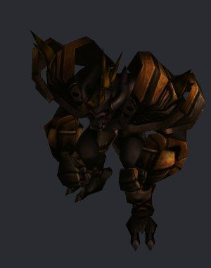 24,15,7 · ΔE 6.4 · lum 0.45× | 37,28,20 · ΔE 0.0 · lum 1.00× |
| Bloody Wolftipo 60 · tarkan | 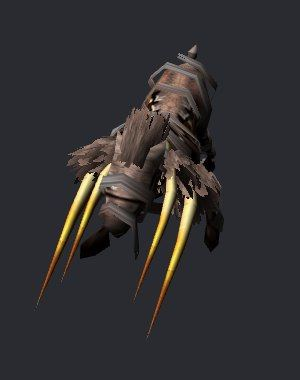 87,72,56 · ΔE 2.6 · lum 1.18× | 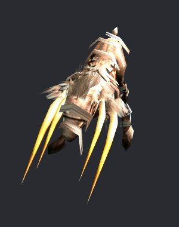 182,160,124 · ΔE 38.9 · lum 6.19× | 95,77,59 · ΔE 5.4 · lum 1.37× |  81,66,50 | 49,32,17 · ΔE 15.3 · lum 0.30× | 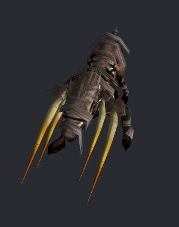 81,66,50 · ΔE 0.0 · lum 1.00× |
| Beam Knighttipo 61 · tarkan | 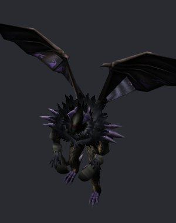 22,21,24 · ΔE 3.4 · lum 0.66× | 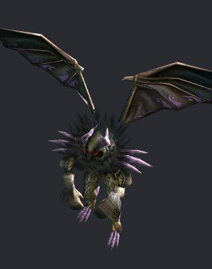 55,51,48 · ΔE 12.2 · lum 2.94× | 34,32,36 · ΔE 2.4 · lum 1.30× | 29,27,30 | 20,15,11 · ΔE 7.2 · lum 0.44× |  29,27,30 · ΔE 0.0 · lum 1.00× |
| Mutanttipo 62 · tarkan | 18,17,15 · ΔE 14.1 · lum 0.21× | 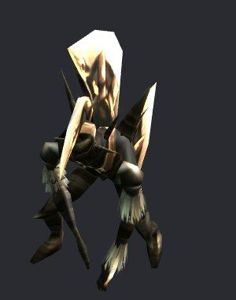 99,92,74 · ΔE 21.2 · lum 3.98× | 58,53,45 · ΔE 3.6 · lum 1.33× | 49,45,38 | 31,23,13 · ΔE 10.7 · lum 0.35× | 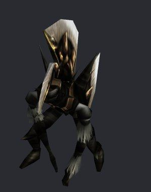 49,45,38 · ΔE 0.0 · lum 1.00× |
| Death Gorgontipo 35 · lost | 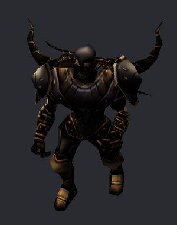 24,18,13 · ΔE 1.0 · lum 0.89× | 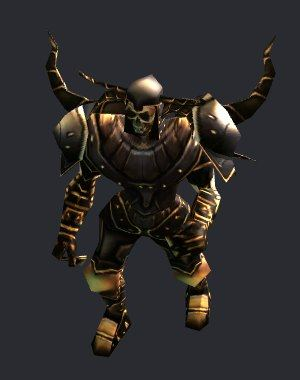 56,44,30 · ΔE 14.4 · lum 3.67× | 31,23,17 · ΔE 2.3 · lum 1.27× |  26,20,14 | 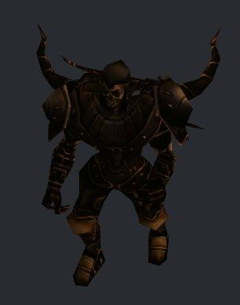 18,12,5 · ΔE 3.4 · lum 0.53× | 26,20,14 · ΔE 0.0 · lum 1.00× |
| Shadowtipo 36 · lost | 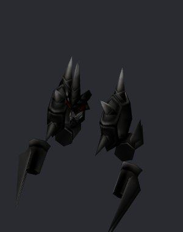 20,20,19 · ΔE 2.1 · lum 0.74× | 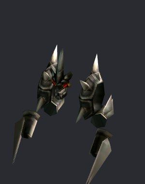 61,58,49 · ΔE 17.0 · lum 4.62× | 29,28,27 · ΔE 2.1 · lum 1.28× |  25,24,23 | 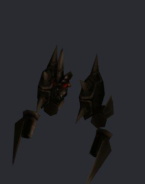 17,14,8 · ΔE 4.8 · lum 0.48× | 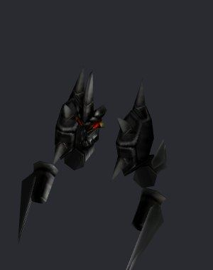 25,24,23 · ΔE 0.0 · lum 1.00× |
| Deviltipo 37 · lost | 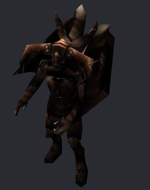 22,14,11 · ΔE 4.2 · lum 0.60× | 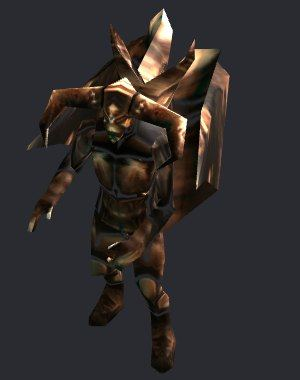 68,51,37 · ΔE 16.8 · lum 4.34× | 36,25,19 · ΔE 2.5 · lum 1.28× |  31,21,16 | 21,12,6 · ΔE 4.4 · lum 0.51× | 31,21,16 · ΔE 0.0 · lum 1.00× |
| Balrogtipo 38 · lost | 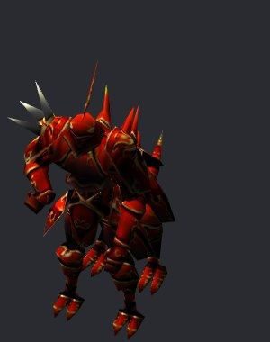 58,17,7 · ΔE 7.3 · lum 0.64× | 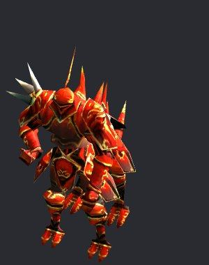 130,53,26 · ΔE 23.2 · lum 3.60× | 85,27,12 · ΔE 5.8 · lum 1.33× | 73,23,10 | 45,13,4 · ΔE 14.2 · lum 0.42× |  73,23,10 · ΔE 0.0 · lum 1.00× |
| Death Knighttipo 40 · lost | 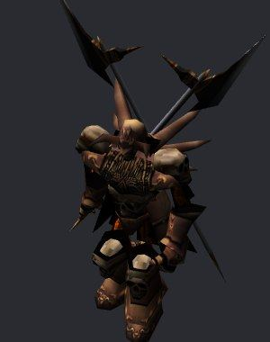 39,27,21 · ΔE 5.0 · lum 0.62× | 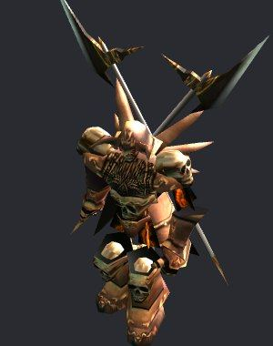 92,71,50 · ΔE 18.0 · lum 3.45× | 59,42,32 · ΔE 3.5 · lum 1.33× | 51,36,28 | 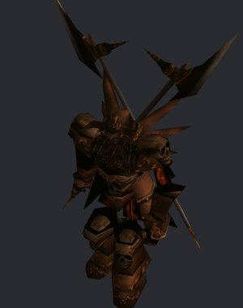 32,19,10 · ΔE 8.7 · lum 0.39× | 51,36,28 · ΔE 0.0 · lum 1.00× |
| Death Cowtipo 41 · lost | 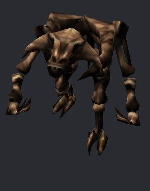 54,39,28 · ΔE 2.2 · lum 1.20× | 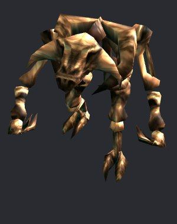 104,81,54 · ΔE 23.3 · lum 4.68× | 57,41,30 · ΔE 3.4 · lum 1.33× |  48,35,25 | 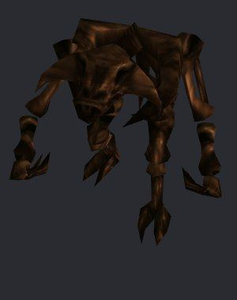 31,19,9 · ΔE 8.6 · lum 0.39× | 48,35,25 · ΔE 0.0 · lum 1.00× |
| Bahamuttipo 45 · atlans | 54,31,24 · ΔE 7.5 · lum 0.54× | 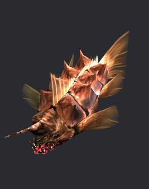 142,90,66 · ΔE 25.7 · lum 3.94× | 86,53,42 · ΔE 4.7 · lum 1.36× | 73,45,36 | 45,23,13 · ΔE 11.4 · lum 0.35× |  73,45,36 · ΔE 0.0 · lum 1.00× |
| Vepartipo 46 · atlans | 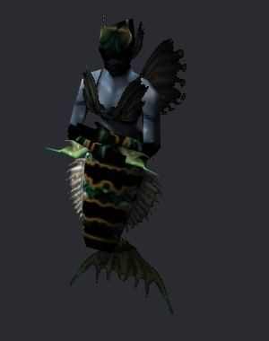 27,30,26 · ΔE 7.1 · lum 0.50× | 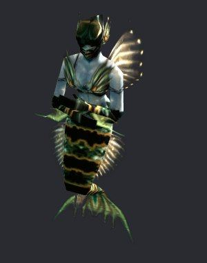 64,71,56 · ΔE 13.0 · lum 2.35× | 47,53,47 · ΔE 3.4 · lum 1.33× | 41,45,40 | 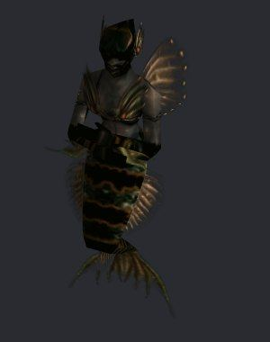 26,23,14 · ΔE 11.0 · lum 0.35× | 41,45,40 · ΔE 0.0 · lum 1.00× |
| Hydratipo 49 · atlans | 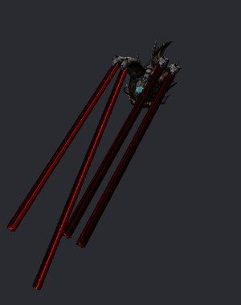 37,8,8 · ΔE 12.0 · lum 0.28× | 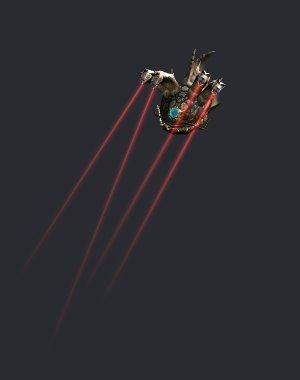 87,67,55 · ΔE 15.5 · lum 3.02× | 60,40,38 · ΔE 2.5 · lum 1.25× |  54,35,33 | 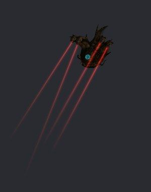 38,20,13 · ΔE 8.0 · lum 0.45× | 54,35,33 · ΔE 0.0 · lum 1.00× |
| Cyclopstipo 17 · dungeon | 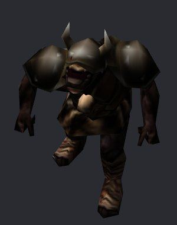 30,23,19 · ΔE 2.5 · lum 0.78× | 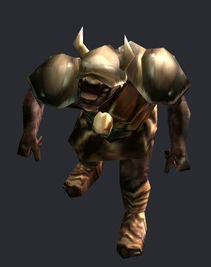 75,60,43 · ΔE 17.5 · lum 4.04× | 41,32,25 · ΔE 2.6 · lum 1.30× | 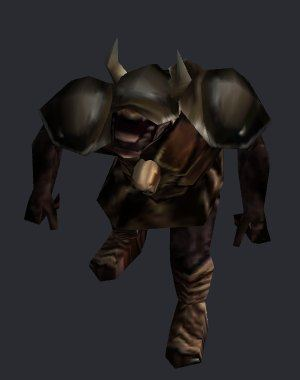 35,27,21 | 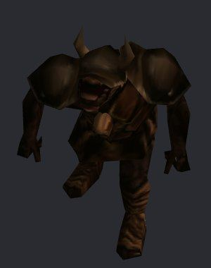 23,15,8 · ΔE 5.8 · lum 0.45× |  35,27,21 · ΔE 0.0 · lum 1.00× |
| Bull Fightertipo 0 · lorencia | 43,34,31 · ΔE 2.4 · lum 0.80× | 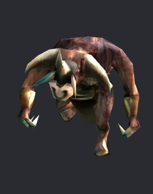 96,77,63 · ΔE 19.2 · lum 3.73× | 58,45,41 · ΔE 3.3 · lum 1.33× | 49,38,35 | 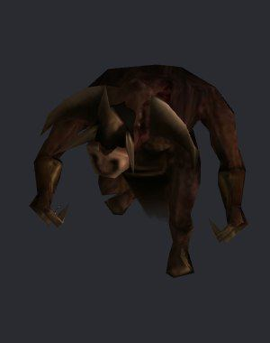 31,20,12 · ΔE 9.3 · lum 0.38× | 49,38,35 · ΔE 0.0 · lum 1.00× |
| Budge Dragontipo 2 · lorencia | 45,21,13 · ΔE 1.9 · lum 0.86× | 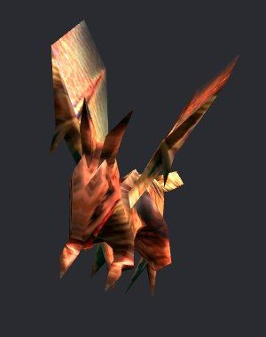 129,75,48 · ΔE 31.0 · lum 7.47× | 58,27,17 · ΔE 4.0 · lum 1.32× |  50,23,15 | 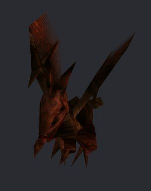 32,13,5 · ΔE 9.0 · lum 0.46× | 50,23,15 · ΔE 0.0 · lum 1.00× |
| Spidertipo 3 · lorencia | 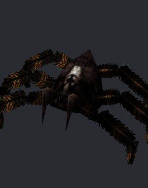 16,11,7 · ΔE 0.2 · lum 1.03× | 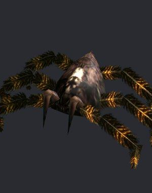 57,43,28 · ΔE 18.9 · lum 7.45× | 18,13,8 · ΔE 0.9 · lum 1.20× | 15,11,7 | 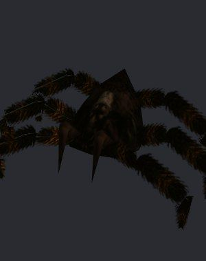 12,8,2 · ΔE 1.1 · lum 0.70× |  15,11,7 · ΔE 0.0 · lum 1.00× |
| Gianttipo 7 · lorencia | 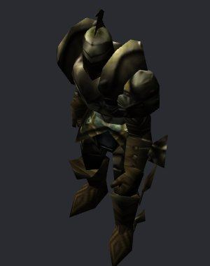 29,26,18 · ΔE 4.4 · lum 0.64× | 75,69,45 · ΔE 17.9 · lum 3.71× | 44,39,27 · ΔE 3.0 · lum 1.31× | 37,34,23 | 24,18,8 · ΔE 7.8 · lum 0.41× | 37,34,23 · ΔE 0.0 · lum 1.00× |
| Monstro | Original C++fórmula do ZzzBMD + luz do chão do mapa, textura do cliente | Mega, modo 3lê o SH e a neblina da cena | Mega, modo 2sem cena: referência neutra | Nosso, mapas originaiso que o usuário aprovou | Nosso antes (r1138)cena Mega, 18h30, 14 m atrás do herói | Nosso depois (R2236)mesma cena, hora e distância |
|---|---|---|---|---|---|---|
| Iron Wheeltipo 57 · tarkan | 31,27,26 · ΔE 10.3 · lum 0.37× | 119,80,67 · ΔE 24.9 · lum 3.27× | 61,56,53 · ΔE 3.8 · lum 1.35× | 53,48,45 | 36,21,16 · ΔE 13.3 · lum 0.31× |  53,48,45 · ΔE 0.0 · lum 1.00× |
| Tantalostipo 58 · tarkan | 17,12,8 · ΔE 9.2 · lum 0.31× | 75,39,26 · ΔE 17.6 · lum 2.40× | 43,33,23 · ΔE 2.7 · lum 1.30× | 37,28,20 | 27,12,7 · ΔE 7.4 · lum 0.41× | 37,28,20 · ΔE 0.0 · lum 1.00× |
| Bloody Wolftipo 60 · tarkan | 55,42,33 · ΔE 11.9 · lum 0.43× | 178,116,82 · ΔE 34.8 · lum 3.82× | 95,78,59 · ΔE 5.4 · lum 1.37× | 81,66,50 | 53,29,18 · ΔE 16.8 · lum 0.28× |  81,66,50 · ΔE 0.0 · lum 1.00× |
| Beam Knighttipo 61 · tarkan | 13,11,13 · ΔE 7.2 · lum 0.31× | 61,36,33 · ΔE 14.9 · lum 2.04× | 35,32,36 · ΔE 2.4 · lum 1.30× |  30,27,31 | 23,12,11 · ΔE 7.4 · lum 0.40× | 30,27,31 · ΔE 0.0 · lum 1.00× |
| Mutanttipo 62 · tarkan | 11,9,8 · ΔE 16.8 · lum 0.11× | 76,42,28 · ΔE 17.8 · lum 1.22× | 57,53,45 · ΔE 3.6 · lum 1.34× | 49,45,38 | 34,20,13 · ΔE 12.5 · lum 0.32× | 49,45,38 · ΔE 0.0 · lum 1.00× |
| Death Gorgontipo 35 · lost | 15,10,8 · ΔE 4.8 · lum 0.44× | 68,37,27 · ΔE 18.3 · lum 3.45× | 31,23,17 · ΔE 2.3 · lum 1.27× |  27,20,15 | 21,9,5 · ΔE 4.1 · lum 0.48× | 27,20,15 · ΔE 0.0 · lum 1.00× |
| Shadowtipo 36 · lost | 12,11,11 · ΔE 5.2 · lum 0.37× | 62,40,34 · ΔE 15.7 · lum 2.88× | 29,28,27 · ΔE 2.1 · lum 1.28× |  25,24,23 | 20,11,8 · ΔE 5.8 · lum 0.43× | 25,24,23 · ΔE 0.0 · lum 1.00× |
| Deviltipo 37 · lost | 13,8,6 · ΔE 7.1 · lum 0.31× | 66,32,23 · ΔE 16.9 · lum 2.59× | 36,25,19 · ΔE 2.5 · lum 1.28× | 31,21,16 | 24,9,6 · ΔE 4.4 · lum 0.47× |  31,21,16 · ΔE 0.0 · lum 1.00× |
| Balrogtipo 38 · lost | 35,9,4 · ΔE 20.8 · lum 0.27× | 131,35,18 · ΔE 26.3 · lum 2.93× | 85,28,12 · ΔE 5.8 · lum 1.33× |  73,24,10 | 48,10,4 · ΔE 12.9 · lum 0.42× | 73,24,10 · ΔE 0.0 · lum 1.00× |
| Death Knighttipo 40 · lost | 23,15,12 · ΔE 12.5 · lum 0.27× | 100,52,36 · ΔE 21.6 · lum 2.55× | 60,43,32 · ΔE 3.5 · lum 1.33× |  51,36,28 | 35,16,10 · ΔE 10.0 · lum 0.36× | 51,36,28 · ΔE 0.0 · lum 1.00× |
| Death Cowtipo 41 · lost | 33,22,16 · ΔE 7.5 · lum 0.48× | 119,65,45 · ΔE 28.1 · lum 4.06× | 57,41,30 · ΔE 3.4 · lum 1.33× |  49,35,25 | 34,16,9 · ΔE 9.9 · lum 0.37× | 49,35,25 · ΔE 0.0 · lum 1.00× |
| Bahamuttipo 45 · atlans | 32,17,13 · ΔE 17.2 · lum 0.22× | 143,65,48 · ΔE 29.2 · lum 2.84× | 86,53,42 · ΔE 4.7 · lum 1.36× | 74,45,36 | 48,20,13 · ΔE 11.7 · lum 0.34× | 74,45,36 · ΔE 0.0 · lum 1.00× |
| Vepartipo 46 · atlans | 16,16,14 · ΔE 13.9 · lum 0.20× | 75,55,42 · ΔE 15.4 · lum 1.71× | 48,53,47 · ΔE 3.5 · lum 1.33× | 41,46,40 | 29,20,14 · ΔE 13.0 · lum 0.32× | 41,46,40 · ΔE 0.0 · lum 1.00× |
| Hydratipo 49 · atlans | 24,4,4 · ΔE 13.9 · lum 0.14× | 92,48,41 · ΔE 15.9 · lum 2.14× | 60,40,38 · ΔE 2.5 · lum 1.25× |  54,35,33 | 42,16,13 · ΔE 9.6 · lum 0.42× | 54,35,33 · ΔE 0.0 · lum 1.00× |
| Cyclopstipo 17 · dungeon | 18,13,11 · ΔE 7.9 · lum 0.36× | 82,47,35 · ΔE 19.7 · lum 3.24× | 41,32,25 · ΔE 2.6 · lum 1.30× | 35,27,21 | 26,12,8 · ΔE 6.8 · lum 0.42× |  35,27,21 · ΔE 0.0 · lum 1.00× |
| Bull Fightertipo 0 · lorencia | 26,19,18 · ΔE 10.2 · lum 0.33× | 105,60,49 · ΔE 22.7 · lum 2.95× | 58,45,42 · ΔE 3.4 · lum 1.33× | 50,38,36 | 34,17,13 · ΔE 10.3 · lum 0.35× | 50,38,36 · ΔE 0.0 · lum 1.00× |
| Budge Dragontipo 2 · lorencia | 28,12,7 · ΔE 11.5 · lum 0.39× | 109,38,23 · ΔE 27.7 · lum 3.58× | 58,27,17 · ΔE 4.0 · lum 1.32× | 50,23,15 | 35,10,5 · ΔE 8.1 · lum 0.44× |  50,23,15 · ΔE 0.0 · lum 1.00× |
| Spidertipo 3 · lorencia | 10,6,4 · ΔE 1.7 · lum 0.58× | 50,24,17 · ΔE 16.3 · lum 3.78× | 18,13,8 · ΔE 0.9 · lum 1.20× |  15,11,7 | 15,5,2 · ΔE 2.2 · lum 0.58× | 15,11,7 · ΔE 0.0 · lum 1.00× |
| Gianttipo 7 · lorencia | 17,14,10 · ΔE 10.6 · lum 0.29× | 75,45,28 · ΔE 17.5 · lum 2.17× | 44,40,27 · ΔE 3.0 · lum 1.31× | 37,34,23 | 28,15,8 · ΔE 9.7 · lum 0.37× |  37,34,23 · ΔE 0.0 · lum 1.00× |
| Monstro | Original C++fórmula do ZzzBMD + luz do chão do mapa, textura do cliente | Mega, modo 3lê o SH e a neblina da cena | Mega, modo 2sem cena: referência neutra | Nosso, mapas originaiso que o usuário aprovou | Nosso antes (r1138)cena Mega, 18h30, 14 m atrás do herói | Nosso depois (R2236)mesma cena, hora e distância |
|---|---|---|---|---|---|---|
| Iron Wheeltipo 57 · tarkan | 10,28,34 · ΔE 15.6 · lum 0.34× | 71,91,94 · ΔE 20.0 · lum 3.17× | 61,56,52 · ΔE 3.8 · lum 1.34× |  52,48,45 | 30,24,22 · ΔE 11.2 · lum 0.33× | 52,48,45 · ΔE 0.0 · lum 1.00× |
| Tantalostipo 58 · tarkan | 5,13,11 · ΔE 11.9 · lum 0.27× | 48,56,50 · ΔE 14.7 · lum 2.91× | 43,32,23 · ΔE 2.7 · lum 1.30× | 37,28,20 | 21,15,13 · ΔE 8.1 · lum 0.43× |  37,28,20 · ΔE 0.0 · lum 1.00× |
| Bloody Wolftipo 60 · tarkan | 17,44,43 · ΔE 24.4 · lum 0.36× | 157,164,152 · ΔE 39.0 · lum 6.12× | 95,77,59 · ΔE 5.4 · lum 1.37× | 81,66,50 | 46,32,24 · ΔE 15.9 · lum 0.29× |  81,66,50 · ΔE 0.0 · lum 1.00× |
| Beam Knighttipo 61 · tarkan | 4,12,17 · ΔE 8.0 · lum 0.29× | 30,43,53 · ΔE 10.2 · lum 1.99× | 35,32,36 · ΔE 2.4 · lum 1.30× |  29,27,30 | 17,15,17 · ΔE 5.9 · lum 0.43× | 29,27,30 · ΔE 0.0 · lum 1.00× |
| Mutanttipo 62 · tarkan | 3,10,11 · ΔE 17.6 · lum 0.10× | 60,73,69 · ΔE 13.7 · lum 2.27× | 58,53,45 · ΔE 3.6 · lum 1.34× | 49,45,38 | 28,23,20 · ΔE 10.9 · lum 0.34× | 49,45,38 · ΔE 0.0 · lum 1.00× |
| Death Gorgontipo 35 · lost | 5,11,10 · ΔE 7.1 · lum 0.38× | 35,43,40 · ΔE 12.0 · lum 2.95× | 31,23,17 · ΔE 2.3 · lum 1.27× |  26,20,14 | 15,12,11 · ΔE 4.9 · lum 0.51× | 26,20,14 · ΔE 0.0 · lum 1.00× |
| Shadowtipo 36 · lost | 4,12,14 · ΔE 6.3 · lum 0.34× | 41,57,62 · ΔE 16.4 · lum 4.10× | 29,28,27 · ΔE 2.1 · lum 1.28× | 25,24,23 | 14,14,14 · ΔE 4.5 · lum 0.47× |  25,24,23 · ΔE 0.0 · lum 1.00× |
| Deviltipo 37 · lost | 4,8,8 · ΔE 9.2 · lum 0.26× | 38,43,42 · ΔE 12.2 · lum 2.67× | 36,25,19 · ΔE 2.5 · lum 1.28× |  31,21,16 | 18,12,12 · ΔE 5.9 · lum 0.49× | 31,21,16 · ΔE 0.0 · lum 1.00× |
| Balrogtipo 38 · lost | 11,10,5 · ΔE 31.9 · lum 0.15× | 80,47,35 · ΔE 13.2 · lum 1.88× | 85,27,12 · ΔE 5.8 · lum 1.33× | 73,23,10 | 42,13,10 · ΔE 17.2 · lum 0.39× |  73,23,10 · ΔE 0.0 · lum 1.00× |
| Death Knighttipo 40 · lost | 7,16,16 · ΔE 16.8 · lum 0.23× | 56,63,59 · ΔE 15.4 · lum 2.30× | 59,43,32 · ΔE 3.5 · lum 1.33× | 51,36,28 | 29,19,16 · ΔE 10.2 · lum 0.37× |  51,36,28 · ΔE 0.0 · lum 1.00× |
| Death Cowtipo 41 · lost | 10,24,21 · ΔE 16.0 · lum 0.39× | 74,81,72 · ΔE 21.4 · lum 4.08× | 57,41,30 · ΔE 3.4 · lum 1.33× |  49,35,25 | 28,19,15 · ΔE 10.2 · lum 0.38× | 49,35,25 · ΔE 0.0 · lum 1.00× |
| Bahamuttipo 45 · atlans | 10,18,18 · ΔE 25.2 · lum 0.16× | 104,96,90 · ΔE 22.8 · lum 3.50× | 86,53,42 · ΔE 4.7 · lum 1.36× | 73,45,36 | 42,23,19 · ΔE 12.7 · lum 0.33× | 73,45,36 · ΔE 0.0 · lum 1.00× |
| Vepartipo 46 · atlans | 5,17,19 · ΔE 14.5 · lum 0.19× | 28,49,51 · ΔE 7.8 · lum 1.07× | 48,53,47 · ΔE 3.4 · lum 1.33× |  41,45,40 | 24,23,20 · ΔE 10.7 · lum 0.34× | 41,45,40 · ΔE 0.0 · lum 1.00× |
| Hydratipo 49 · atlans | 7,5,6 · ΔE 17.4 · lum 0.08× | 64,67,72 · ΔE 17.4 · lum 2.65× | 60,40,38 · ΔE 2.5 · lum 1.25× | 54,35,33 | 33,20,22 · ΔE 9.1 · lum 0.42× | 54,35,33 · ΔE 0.0 · lum 1.00× |
| Cyclopstipo 17 · dungeon | 6,14,14 · ΔE 10.8 · lum 0.31× | 49,58,56 · ΔE 15.6 · lum 3.25× | 41,32,25 · ΔE 2.6 · lum 1.30× | 35,27,21 | 20,15,14 · ΔE 7.2 · lum 0.43× |  35,27,21 · ΔE 0.0 · lum 1.00× |
| Bull Fightertipo 0 · lorencia | 8,20,24 · ΔE 15.2 · lum 0.29× | 61,71,74 · ΔE 16.7 · lum 2.74× | 58,45,42 · ΔE 3.3 · lum 1.33× | 49,38,35 | 28,20,19 · ΔE 9.4 · lum 0.36× | 49,38,35 · ΔE 0.0 · lum 1.00× |
| Budge Dragontipo 2 · lorencia | 9,13,10 · ΔE 19.0 · lum 0.27× | 85,70,57 · ΔE 21.3 · lum 5.04× | 58,27,17 · ΔE 4.0 · lum 1.32× |  50,23,15 | 29,13,11 · ΔE 11.4 · lum 0.44× | 50,23,15 · ΔE 0.0 · lum 1.00× |
| Spidertipo 3 · lorencia | 3,7,5 · ΔE 3.2 · lum 0.49× | 35,41,39 · ΔE 13.6 · lum 5.82× | 18,13,8 · ΔE 0.9 · lum 1.20× | 15,11,7 | 9,8,8 · ΔE 2.5 · lum 0.68× |  15,11,7 · ΔE 0.0 · lum 1.00× |
| Gianttipo 7 · lorencia | 5,15,13 · ΔE 12.5 · lum 0.26× | 39,53,47 · ΔE 11.8 · lum 2.02× | 44,40,27 · ΔE 3.0 · lum 1.31× | 37,34,23 | 21,18,14 · ΔE 9.2 · lum 0.39× | 37,34,23 · ΔE 0.0 · lum 1.00× |
| Monstro | Original C++fórmula do ZzzBMD + luz do chão do mapa, textura do cliente | Mega, modo 3lê o SH e a neblina da cena | Mega, modo 2sem cena: referência neutra | Nosso, mapas originaiso que o usuário aprovou | Nosso antes (r1138)cena Mega, 18h30, 14 m atrás do herói | Nosso depois (R2236)mesma cena, hora e distância |
|---|---|---|---|---|---|---|
| Iron Wheeltipo 57 · tarkan | 48,45,43 · ΔE 1.7 · lum 0.88× | 71,72,77 · ΔE 12.0 · lum 2.15× | 61,56,53 · ΔE 3.8 · lum 1.34× |  52,48,45 | 33,23,17 · ΔE 11.9 · lum 0.33× | 52,48,45 · ΔE 0.0 · lum 1.00× |
| Tantalostipo 58 · tarkan | 27,20,14 · ΔE 5.1 · lum 0.60× | 66,58,50 · ΔE 14.0 · lum 3.48× | 43,33,23 · ΔE 2.7 · lum 1.30× | 37,28,20 | 23,14,8 · ΔE 7.3 · lum 0.40× | 37,28,20 · ΔE 0.0 · lum 1.00× |
| Bloody Wolftipo 60 · tarkan | 83,70,54 · ΔE 1.8 · lum 1.10× | 77,71,65 · ΔE 7.9 · lum 1.10× | 94,77,58 · ΔE 5.3 · lum 1.37× | 81,66,50 | 51,32,19 · ΔE 15.2 · lum 0.30× | 81,66,50 · ΔE 0.0 · lum 1.00× |
| Beam Knighttipo 61 · tarkan | 20,19,22 · ΔE 4.1 · lum 0.59× | 70,70,81 · ΔE 20.4 · lum 5.40× | 35,32,36 · ΔE 2.4 · lum 1.30× | 30,27,31 | 19,13,12 · ΔE 6.9 · lum 0.39× |  30,27,31 · ΔE 0.0 · lum 1.00× |
| Mutanttipo 62 · tarkan | 17,16,14 · ΔE 14.6 · lum 0.19× | 75,72,66 · ΔE 12.1 · lum 2.44× | 58,53,45 · ΔE 3.6 · lum 1.33× |  49,45,38 | 31,22,15 · ΔE 11.1 · lum 0.33× | 49,45,38 · ΔE 0.0 · lum 1.00× |
| Death Gorgontipo 35 · lost | 23,17,13 · ΔE 1.8 · lum 0.81× | 49,44,39 · ΔE 11.4 · lum 3.38× | 31,23,17 · ΔE 2.3 · lum 1.27× |  26,20,14 | 17,10,6 · ΔE 4.2 · lum 0.45× | 26,20,14 · ΔE 0.0 · lum 1.00× |
| Shadowtipo 36 · lost | 19,19,18 · ΔE 2.6 · lum 0.69× | 43,45,47 · ΔE 10.2 · lum 2.79× | 29,28,27 · ΔE 2.1 · lum 1.28× |  25,24,23 | 16,12,9 · ΔE 5.0 · lum 0.41× | 25,24,23 · ΔE 0.0 · lum 1.00× |
| Deviltipo 37 · lost | 20,14,11 · ΔE 4.9 · lum 0.55× | 59,48,43 · ΔE 13.2 · lum 3.74× | 36,25,19 · ΔE 2.5 · lum 1.28× | 31,21,16 | 19,10,6 · ΔE 5.1 · lum 0.44× |  31,21,16 · ΔE 0.0 · lum 1.00× |
| Balrogtipo 38 · lost | 54,16,7 · ΔE 9.6 · lum 0.57× | 101,46,31 · ΔE 10.6 · lum 2.34× | 85,28,12 · ΔE 5.8 · lum 1.33× | 73,24,10 | 46,11,4 · ΔE 13.8 · lum 0.41× |  73,24,10 · ΔE 0.0 · lum 1.00× |
| Death Knighttipo 40 · lost | 36,26,20 · ΔE 6.3 · lum 0.56× | 83,70,63 · ΔE 15.3 · lum 3.21× | 60,43,32 · ΔE 3.5 · lum 1.33× | 51,36,28 | 32,18,11 · ΔE 9.5 · lum 0.36× | 51,36,28 · ΔE 0.0 · lum 1.00× |
| Death Cowtipo 41 · lost | 50,37,27 · ΔE 0.9 · lum 1.08× | 67,58,50 · ΔE 10.5 · lum 2.30× | 57,41,30 · ΔE 3.4 · lum 1.33× |  49,35,25 | 31,17,10 · ΔE 9.4 · lum 0.37× | 49,35,25 · ΔE 0.0 · lum 1.00× |
| Bahamuttipo 45 · atlans | 50,29,23 · ΔE 9.0 · lum 0.48× | 88,65,59 · ΔE 9.3 · lum 1.79× | 86,53,42 · ΔE 4.7 · lum 1.36× |  73,45,36 | 46,22,14 · ΔE 11.3 · lum 0.35× | 73,45,36 · ΔE 0.0 · lum 1.00× |
| Vepartipo 46 · atlans | 25,28,24 · ΔE 8.3 · lum 0.43× | 71,82,81 · ΔE 16.2 · lum 3.12× | 48,53,47 · ΔE 3.5 · lum 1.33× | 41,46,40 | 26,22,16 · ΔE 11.4 · lum 0.33× |  41,46,40 · ΔE 0.0 · lum 1.00× |
| Hydratipo 49 · atlans | 35,8,7 · ΔE 11.9 · lum 0.25× | 68,53,54 · ΔE 8.6 · lum 1.92× | 60,40,38 · ΔE 2.5 · lum 1.25× | 54,35,33 | 38,18,15 · ΔE 8.1 · lum 0.42× | 54,35,33 · ΔE 0.0 · lum 1.00× |
| Cyclopstipo 17 · dungeon | 27,22,18 · ΔE 3.6 · lum 0.71× | 54,48,44 · ΔE 9.9 · lum 2.54× | 41,32,25 · ΔE 2.6 · lum 1.30× | 35,27,21 | 22,13,8 · ΔE 6.6 · lum 0.40× |  35,27,21 · ΔE 0.0 · lum 1.00× |
| Bull Fightertipo 0 · lorencia | 40,32,30 · ΔE 3.7 · lum 0.72× | 74,67,70 · ΔE 13.5 · lum 2.70× | 58,45,42 · ΔE 3.4 · lum 1.33× | 49,38,36 | 31,19,14 · ΔE 9.5 · lum 0.35× | 49,38,36 · ΔE 0.0 · lum 1.00× |
| Budge Dragontipo 2 · lorencia | 42,20,12 · ΔE 3.6 · lum 0.78× | 83,48,36 · ΔE 12.9 · lum 3.04× | 58,27,17 · ΔE 4.0 · lum 1.32× |  50,23,15 | 32,11,6 · ΔE 9.3 · lum 0.42× | 50,23,15 · ΔE 0.0 · lum 1.00× |
| Spidertipo 3 · lorencia | 15,11,7 · ΔE 0.2 · lum 0.97× | 25,20,15 · ΔE 3.9 · lum 2.08× | 18,13,8 · ΔE 0.9 · lum 1.20× |  15,11,7 | 10,5,3 · ΔE 1.7 · lum 0.51× | 15,11,7 · ΔE 0.0 · lum 1.00× |
| Gianttipo 7 · lorencia | 26,24,17 · ΔE 5.5 · lum 0.58× | 71,70,59 · ΔE 16.4 · lum 3.78× | 44,40,28 · ΔE 3.0 · lum 1.31× | 37,34,23 | 24,16,9 · ΔE 8.8 · lum 0.37× |  37,34,23 · ΔE 0.0 · lum 1.00× |
| Monstro | Original C++fórmula do ZzzBMD + luz do chão do mapa, textura do cliente | Mega, modo 3lê o SH e a neblina da cena | Mega, modo 2sem cena: referência neutra | Nosso, mapas originaiso que o usuário aprovou | Nosso antes (r1138)cena Mega, 18h30, 14 m atrás do herói | Nosso depois (R2236)mesma cena, hora e distância |
|---|---|---|---|---|---|---|
| Iron Wheeltipo 57 · tarkan | 51,47,45 · ΔE 0.9 · lum 0.95× | 177,168,160 · ΔE 49.3 · lum 13.06× | 62,56,53 · ΔE 3.8 · lum 1.35× | 53,48,45 | 37,26,19 · ΔE 11.1 · lum 0.38× |  53,48,45 · ΔE 0.0 · lum 1.00× |
| Tantalostipo 58 · tarkan | 28,21,15 · ΔE 4.5 · lum 0.64× | 110,93,74 · ΔE 30.3 · lum 9.19× | 43,33,23 · ΔE 2.7 · lum 1.30× | 37,28,20 | 26,15,8 · ΔE 6.5 · lum 0.45× |  37,28,20 · ΔE 0.0 · lum 1.00× |
| Bloody Wolftipo 60 · tarkan | 86,72,56 · ΔE 2.3 · lum 1.16× | 205,185,162 · ΔE 47.0 · lum 8.48× | 95,78,59 · ΔE 5.4 · lum 1.37× |  81,66,50 | 57,36,21 · ΔE 13.7 · lum 0.36× | 81,66,50 · ΔE 0.0 · lum 1.00× |
| Beam Knighttipo 61 · tarkan | 22,20,23 · ΔE 3.6 · lum 0.64× | 104,97,107 · ΔE 32.1 · lum 10.84× | 35,32,36 · ΔE 2.4 · lum 1.30× | 30,27,31 | 21,15,13 · ΔE 6.6 · lum 0.44× | 30,27,31 · ΔE 0.0 · lum 1.00× |
| Mutanttipo 62 · tarkan | 18,17,14 · ΔE 14.2 · lum 0.21× | 105,98,85 · ΔE 23.3 · lum 4.61× | 58,53,45 · ΔE 3.6 · lum 1.34× | 49,45,38 | 34,24,16 · ΔE 10.1 · lum 0.39× | 49,45,38 · ΔE 0.0 · lum 1.00× |
| Death Gorgontipo 35 · lost | 24,18,13 · ΔE 1.3 · lum 0.86× | 103,87,72 · ΔE 32.0 · lum 13.31× | 31,23,17 · ΔE 2.3 · lum 1.27× | 27,20,15 | 19,11,6 · ΔE 3.7 · lum 0.50× |  27,20,15 · ΔE 0.0 · lum 1.00× |
| Shadowtipo 36 · lost | 20,19,19 · ΔE 2.3 · lum 0.73× | 93,91,89 · ΔE 30.3 · lum 11.31× | 29,28,27 · ΔE 2.1 · lum 1.28× | 25,24,23 | 17,13,10 · ΔE 4.7 · lum 0.46× | 25,24,23 · ΔE 0.0 · lum 1.00× |
| Deviltipo 37 · lost | 21,14,11 · ΔE 4.4 · lum 0.58× | 105,78,65 · ΔE 29.2 · lum 10.15× | 36,25,19 · ΔE 2.5 · lum 1.28× |  31,21,16 | 22,11,7 · ΔE 4.4 · lum 0.49× | 31,21,16 · ΔE 0.0 · lum 1.00× |
| Balrogtipo 38 · lost | 57,17,7 · ΔE 8.1 · lum 0.61× | 187,81,48 · ΔE 41.8 · lum 8.01× | 85,28,12 · ΔE 5.8 · lum 1.33× |  73,24,10 | 51,13,4 · ΔE 11.2 · lum 0.48× | 73,24,10 · ΔE 0.0 · lum 1.00× |
| Death Knighttipo 40 · lost | 38,27,20 · ΔE 5.5 · lum 0.60× | 157,128,105 · ΔE 40.7 · lum 11.35× | 60,43,33 · ΔE 3.5 · lum 1.33× | 51,37,28 | 36,20,12 · ΔE 8.3 · lum 0.42× | 51,37,28 · ΔE 0.0 · lum 1.00× |
| Death Cowtipo 41 · lost | 53,39,28 · ΔE 1.7 · lum 1.16× | 168,138,110 · ΔE 45.7 · lum 14.21× | 57,42,30 · ΔE 3.4 · lum 1.33× |  49,35,26 | 34,19,11 · ΔE 8.2 · lum 0.43× | 49,35,26 · ΔE 0.0 · lum 1.00× |
| Bahamuttipo 45 · atlans | 53,31,24 · ΔE 8.1 · lum 0.52× | 193,137,115 · ΔE 41.8 · lum 8.80× | 86,53,42 · ΔE 4.7 · lum 1.36× |  74,45,36 | 51,24,15 · ΔE 9.8 · lum 0.41× | 74,45,36 · ΔE 0.0 · lum 1.00× |
| Vepartipo 46 · atlans | 27,30,26 · ΔE 7.5 · lum 0.48× | 133,140,125 · ΔE 39.4 · lum 9.83× | 48,53,47 · ΔE 3.5 · lum 1.33× | 41,46,41 | 29,25,17 · ΔE 10.5 · lum 0.38× | 41,46,41 · ΔE 0.0 · lum 1.00× |
| Hydratipo 49 · atlans | 36,8,8 · ΔE 12.0 · lum 0.27× | 137,112,105 · ΔE 33.4 · lum 8.42× | 60,41,38 · ΔE 2.5 · lum 1.25× | 54,35,33 | 44,22,17 · ΔE 6.9 · lum 0.53× | 54,35,33 · ΔE 0.0 · lum 1.00× |
| Cyclopstipo 17 · dungeon | 29,23,19 · ΔE 2.9 · lum 0.76× | 123,103,88 · ΔE 34.8 · lum 11.88× | 41,32,25 · ΔE 2.6 · lum 1.30× | 35,27,22 | 25,15,9 · ΔE 6.0 · lum 0.45× |  35,27,22 · ΔE 0.0 · lum 1.00× |
| Bull Fightertipo 0 · lorencia | 42,33,31 · ΔE 2.9 · lum 0.78× | 165,136,129 · ΔE 43.1 · lum 12.27× | 58,45,42 · ΔE 3.4 · lum 1.33× | 50,38,36 | 35,21,15 · ΔE 8.7 · lum 0.41× | 50,38,36 · ΔE 0.0 · lum 1.00× |
| Budge Dragontipo 2 · lorencia | 45,21,13 · ΔE 2.5 · lum 0.83× | 147,81,57 · ΔE 36.4 · lum 9.39× | 58,27,17 · ΔE 4.0 · lum 1.32× | 50,23,15 | 35,13,6 · ΔE 7.7 · lum 0.48× |  50,23,15 · ΔE 0.0 · lum 1.00× |
| Spidertipo 3 · lorencia | 16,11,7 · ΔE 0.1 · lum 1.01× | 62,49,35 · ΔE 20.5 · lum 9.23× | 18,13,8 · ΔE 0.9 · lum 1.20× |  16,11,7 | 11,6,3 · ΔE 1.5 · lum 0.56× | 16,11,7 · ΔE 0.0 · lum 1.00× |
| Gianttipo 7 · lorencia | 28,25,17 · ΔE 4.7 · lum 0.62× | 125,116,90 · ΔE 36.5 · lum 10.90× | 44,40,28 · ΔE 3.0 · lum 1.31× | 38,34,24 | 26,18,10 · ΔE 8.0 · lum 0.42× | 38,34,24 · ΔE 0.0 · lum 1.00× |
Lista: antes e depois
Pior caso entre Tarkan, Lost Tower e Atlans, contra o modo de mapas originais.
| Monstro | Antes (r1138) | Depois | Situação |
|---|---|---|---|
| Iron Wheel (57) | ΔE 13.3 · 0.31× | ΔE 0.0 · 1.00× | igual ao modo de mapas originais |
| Tantalos (58) | ΔE 8.1 · 0.41× | ΔE 0.0 · 1.00× | igual ao modo de mapas originais |
| Bloody Wolf (60) | ΔE 16.8 · 0.28× | ΔE 0.0 · 1.00× | igual ao modo de mapas originais |
| Beam Knight (61) | ΔE 7.4 · 0.40× | ΔE 0.0 · 1.00× | igual ao modo de mapas originais |
| Mutant (62) | ΔE 12.5 · 0.32× | ΔE 0.0 · 1.00× | igual ao modo de mapas originais |
| Death Gorgon (35) | ΔE 4.9 · 0.48× | ΔE 0.0 · 1.00× | igual ao modo de mapas originais |
| Shadow (36) | ΔE 5.8 · 0.43× | ΔE 0.0 · 1.00× | igual ao modo de mapas originais; corpo de sprites por osso reposto (falta ver no jogo) |
| Devil (37) | ΔE 5.9 · 0.47× | ΔE 0.0 · 1.00× | igual ao modo de mapas originais |
| Balrog (38) | ΔE 17.2 · 0.39× | ΔE 0.0 · 1.00× | igual ao modo de mapas originais |
| Death Knight (40) | ΔE 10.2 · 0.36× | ΔE 0.0 · 1.00× | igual ao modo de mapas originais |
| Death Cow (41) | ΔE 10.2 · 0.37× | ΔE 0.0 · 1.00× | igual ao modo de mapas originais |
| Bahamut (45) | ΔE 12.7 · 0.33× | ΔE 0.0 · 1.00× | igual ao modo de mapas originais |
| Vepar (46) | ΔE 13.0 · 0.32× | ΔE 0.0 · 1.00× | igual ao modo de mapas originais |
| Hydra (49) | ΔE 9.6 · 0.42× | ΔE 0.0 · 1.00× | igual ao modo de mapas originais |
| Cyclops (17) | ΔE 7.2 · 0.42× | ΔE 0.0 · 1.00× | igual ao modo de mapas originais |
| Bull Fighter (0) | ΔE 10.3 · 0.35× | ΔE 0.0 · 1.00× | igual ao modo de mapas originais |
| Budge Dragon (2) | ΔE 11.4 · 0.44× | ΔE 0.0 · 1.00× | igual ao modo de mapas originais |
| Spider (3) | ΔE 2.5 · 0.58× | ΔE 0.0 · 1.00× | igual ao modo de mapas originais |
| Giant (7) | ΔE 9.7 · 0.37× | ΔE 0.0 · 1.00× | igual ao modo de mapas originais |
O que não ficou igual ou não deu para provar
- Mega no modo 3 (segunda coluna) continua diferente do nosso: ele lê o SH da cena e fica laranja na Lost Tower e azulado em Atlans. Isso contraria a regra de a cor não depender do mapa, então o alvo foi o modo 2 do próprio Mega, que é o que os mapas originais já usam.
- Zaikan (59) não tem prefab 59 no
monsters.bundle; ficou fora da galeria. - Cursed Wizard (34) é montagem de peças de jogador, fora deste palco.
- Shadow e Poison Shadow: os sprites foram escritos pela receita do C++ e compilam, mas não foram vistos em tela.
- Luzes pontuais da cena (tochas, lava) ainda somam luz ao monstro pelo passe ForwardAdd, como no Mega. Não mexi.
- O palco mede a saída do shader. Pós-processamento do quadro, sombra recebida e o horário real não entram. O tom de entardecer do "antes" é o da prova da R2216 (0,70; 0,54; 0,43), não uma leitura da sessão.